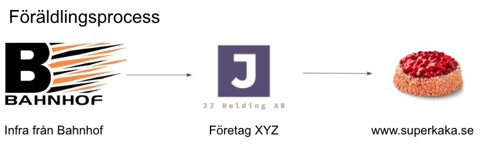
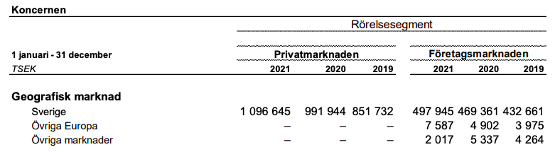
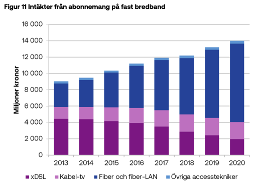
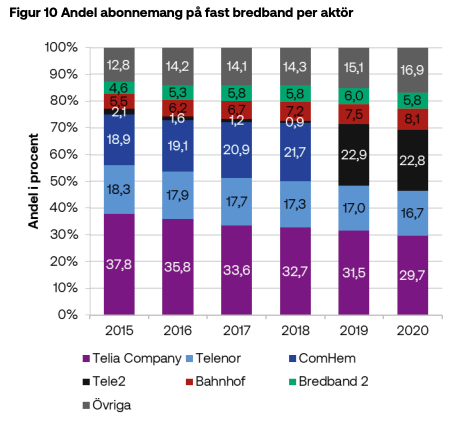
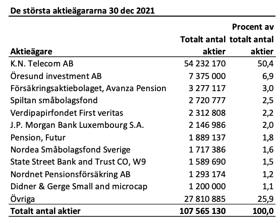

| Publiceringsdatum | Emittent | Person i ledande ställning | Befattning | Närstående | Karaktär | Instrumentnamn | Instrumenttyp | ISIN | Transaktionsdatum | Volym | Volymsenhet | Pris | Valuta | Status |
|---|---|---|---|---|---|---|---|---|---|---|---|---|---|---|
| 2021-05-05 | bahnhof ab (publ) | Eric Hasselqvist | Styrelseledamot | NA | Avyttring | Bahnhof B | Aktie | NA | 2021-05-04 | 20000 | Antal | 42.65 | SEK | NA |
| 2020-04-03 | bahnhof ab | Nicklas Paulson | Styrelseledamot i Bahnhof / VD i Investment AB Öresund | Ja | Avyttring | Bahnhof AB | Aktie | SE0010442418 | 2020-04-02 | 2250000 | Antal | 23.00 | SEK | NA |
| 2017-11-21 | bahnhof ab | Henrik Kemkes | vd i dotterbolag | NA | Förvärv | Bahnhof AB Serie B | NA | SE0010442418 | 2017-11-17 | 10000 | Antal | 20.20 | SEK | NA |
Aktiecase - Bahnhof
aktieanalys
bolagsanalys
Mättad privatmarknad och trött molnverksamhet. Vad är det som ska rädda Bahnhof från stagnering?
Bakgrund
Bahnhof är en bredbandsleverantör som existerat sedan 90-talet och styrs av Jon Karlung tillsammans med parhästen Anders Norman sedan år 2004. Sedan år 2007 är bolaget på börsen har generellt utvecklats väl, då företaget red starkt på den urstarka utvecklingen under 10-talet som präglades av fiberutbyggnaden. Under 10-talet växte fiberabonnemangen med 3x enligt PTS. Samtidigt har snabbt internet (100 mbits) växt med 8,2x sin storlek vad den var 2010 jämfört med 2020. Bahnhof har under samma period växt med 6,2x sin dåvarande storlek.
Bahnhof är kända för sitt avstamp och skickliga sätt att främja integritet för sina kunder. Jon Karlung, vd och storägare av Bahnhof, är starkt förknippad med yttrandefrihet och trovärdighet.
Värdeskapande processen
Bahnhof står för en tjänst som är den grundläggande infrastrukturen som sedan förädlas innan den levereras till en slutkund.

Processen kan även vara annan typ av infrastuktur som bredband, där bredband används för att nå alla tänkbara tjänster som finns på internet.
Verksamheten
Verksamheten är uppdelad i fyra ben:
Privat bredband/VPN/antivirus/TV-tjänster
Företagstjänster i form av bredband och cloudtjänster
Bostadsrättsföreningar - samma tjänster som för privatpersoner
Bygg/fastighetsbolag - tjänster som porttelefon, flexibel installation av nya tjänster, jour m.fl.
Redovisningen är indelad i två ben som denna analysen kommer att fokusera på.

Under 2021 växte bolaget med 9 procent, där privatmarknaden står för 10,7 procent (16,4) och företagsmarkanden står för 6,18 procent (8,14). Generellt är det svagare utveckling då marknaden för privatkunder är mer mättad än tidigare och företagen verkar inte heller särskilt pigga på Bahnhofs utbud.
Privatmarknaden
425 592 kunder är det som använder sig av Bahnhofs bredbandstjänster i slutet av 2021, en ökning med 7,6 procent från 2020 till 2021. Det är en avtagande tillväxt för bredband, som har hållit i sig under en längre tid, då marknaden blir allt mer mättad och de flesta har redan bredband idag som är supersnabbt. Bahnhof har under de senaste åren varit i de högsta rankningarna om inte den högst rankande bredbandsleverantören av alla sina konkurrenter.
Öppet stadsnät och exklusiva nät
Marknaden består av två stora ben, det öppna statsnätet och exklusiva avtal till en specifik leverantör. När det bestäms mellan en leverantör av bredband och en fastighetsägare att fiber ska intstalleras så diskuteras priset. Att gräva ner fiber kostar och en lösning för att göra det billigare är att sälja bort sin rättighet till fiberkabeln till en specifik leverantör istället för att ha rätt till att välja fritt bland alla på det öppna stadsnätet.
Detta leder till långa och generellt stabila kontrakt med BRF:er som länge kör på samma avtal med en leverantör. Bahnhof kör delvis på detta och det är därför det är intressant att vara tajt allierad med BRF och byggbolagen. Även fast kunder är missnöjda och vill egentligen byta till någon annan bredbandsleverantör är det för höga kostnader för att ta den smällen.
Det öppna stadsnätet är en fiberanslutning där det enkelt går att byta från en leverantör till en annan. Ofta finns det en portal där kunder kan logga in och helt enkelt säga upp sitt nuvarande avtal och byta till en annan.
Andra tjänster - Antivirus och VPN
Antivirus och VPN är inga unika produkter och förväntas inte heller att ha någon särskild tillväxt. Bahnhof redovisar inte hur stor andel av intäkterna som kommer från dessa tjänster.
Var kommer tillväxten ifrån?
Enligt PTS kostar den genomsnittliga bredbandet för slutkunden 247 SEK i månaden under 2020, vilket är att jämföra med 205 SEK i månaden år 2010, alltså en ökning med 20 procent. Slutkunderna får mer bredband för pengarna.

Eftersom att det inte är genomsnittliga inkomsten per abonnemang som ökar särskilt mycket handlar det snarare om att allt fler skaffar abonnemang. Fiber växer med 16 procent under 2020, där hela marknaden växer och att fler byter från xDSL till fiber.Under 2020 var det 69 procent av alla pengarna som lades på fiberanslutningar, vilket är att jämföra med 22 procent år 2011 (första gången som mätningen gjordes). De andra 31 procenten under 2020 av alla pengar som lades på bredbandsanslutningar kommer hälften från DSL och andra halvan från kabel-tv.
Framtiden för bredband - Risker
Bredbandsmarknaden är en viktig del för Bahnhof för att generera intäkter som sedan kan investeras i andra kostsamma projekt såsom cloud. Det finns en risk att bredband i framtiden kommer att vara allt mer mobilt, då ny teknik som Starlink från SpaceX och 5G kan sätta bredband ur spel. Bredband är på så sätt en utbytbar teknik, men det som talar för att det inte kommer att ske inom snar framtiden är att det fortfarande är relativt billigt att ha ett snabbt fiberbredband.
Marknaden kommer att fortsätta att bli allt mer mättad och Bahnhof kommer att ta vissa marknadsandelar från andra bredbandsleverantörer, men i lägre utsträckning. Över tid kommer marknaden att sluta att växa tills det kommer en ny teknik som kommer att ge en 10x förbättring för kunderna.
Mycket pengar är nedgrävda tillsammans med fiberlinorna och om det kommer ny teknik som lyckas att leverera billigare internet så är det en omfattande risk att bredband blir obselet. Fasta kostnaderna för att uppdatera internet är inget som det flesta vill prata om. Ett skifte kan komma snabbt om det är enkelt att byta.
Konkurrens

Som vanligt är det Telia som tappar marknadsandelar. Detta är troligen det som kommer att ske framåt också, fast i en lägre takt än tidigare. Ett sätt att se på det är att bredband fungerar och det är få som byter om de inte måste.
Generellt sett så ser de flesta personerna på bredband som en homogen vara, det spelar ingen roll vem som levelerar den utan det viktigaste för kunden är bara att det fungerar och inte kostar för mycket.
Bahnhof däremot har en edge jämfört med de flesta andra leverantörerna och det är ett starkt rykte och många inbitna nördare som följer exempelvis Bahnhof på Facebook. Vem annars bryr sig ett svätt om sin internetleverantör? Väldigt få. 26 tusen följare, med en helt okej bas av aktivitet är ändå bra jobbat!
Vallgrav
Unit economics: Du kan som kund till Bahnhof få bättre tjänst som hos andra för samma peng. Många andra telecom jättar, tele2 och telia, gillar att ge bort ett par månader gratis bredband eller att låsa in sina kunder med exklusiva linor till en BRF. Perfekt för att tjäna bra pengar över tid, men kundnöjdheten är inte den bästa. Där vinner Bahnhof.
Jag tror att Bahnhof skulle kunna ta mer betalt för denna vallgrav, men då skulle också färre som byter idag också byta till Bahnhof. Det bästa för bolaget är att troligen att fortsätta, expandera kundbasen och låta vinstmarginalerna vara ungefär samma.
Insiders & ägande
Insiders och ägande är superviktigt för att bygga förtroende för bolaget och verksamheten.
Insynshandel
Genrellt få som köper eller säljer, men tråkigt det senaste är ett stort sälj.
Ägande

Bahnhof har ett urstarkt ägande från Karlung och Norman.
Makrorisker - Pricing power
Ränteriskerna är nog inte särskilt farliga för Bahnhof, med en stor nettokassa finns det säkert bra möjligheter att förvärva nya bolag. Jag anser att bredband kommer generellt ha bra pricing power framöver och kunderna kommer att absorbera kostnadsökningarna för bredband.
Aktiekursen
Aktiekursen har generellt gått mycket bra sedan börsnoteringen. Aktien finns att handla på Spotlight och innan årsskiftet ska Bahnhof flytta sin aktie till Nasdaq. Bahnhof kommmer även att ändra redovisningsstandard till IFRS 16 från K3.
Värdering
Då Bahnhof har en stor kassa anser jag att det är rimligt att använda EV/EBIT som mått på värdering jämfört med P/E. I skrivande stund har Bahnhof en EV/EBIT på 18, vilket är lite högre än peers som Tele2 och Telia som har 17,4 och 14,2 respektive. Relativt ser det alltså inte så dyrt ut, då de andra jättarna inte växer stabilt samt har svagare ägare.
Bahnhof i stort växer med 8,3 procent på rullade 12 månader i Q1 2022. Vinstmarginalen har har varit stabil på ca 9,3 procent under en längre tid. Trenden för Bahnhofs omsättningstillväxt är däremot inte särskilt kul. Under 2017 växte bolaget med 27 procent för att tappa till 14 procent år 2019. Under 2021 växte bolaget med 9 procent.
Över tid tror jag inte detta kommer att vända till det bättre heller, som vi märkte tidigare är det privata marknaden som driver tillväxten. Privata bredbandsmarkanden är allt mer mättad för varje år och företagsmarknaden verkar inte heller ta fart. Inte mycket talar för att den kommer att göra det heller, det som tidigare såg ljust ut med molntjänster visar sig vara en allt tuffare marknad att ge sig in på då jättarna växer snabbare än alla andra med sina 40-50 procentiga omsättningsökningar per år.
Med en tappande omsättningstillväxt tror jag att vi snart närmar oss runt 5 procent omsättningstillväxt om Karlung inte lyckas vända trenden. Det är ingen känsla av att Bahnhof är desperata än, men det kanske ska bli insprisat snart?
Om det inte vänder
Om det inte vänder så bör värderingen gå ner, från att idag vara värderade till att växa med ca 12-14 procent med 12 procents rörelsemarginal. Om Bahnhof växer med 5 procent bör värderingen vara runt P/E 12 eller EV/ebit 10. Det innebär att kursen ska ner med 40 procent från dagens nivåer. Med tanke på att Bahnhof genellt är kvalité och har starka ägare går det att tumma lite på det.
Triggers som kan slå i fördel för Bahnhof
Miljörörelsen kring datacenter blir starkare
Bahnhof använder sin energi från datacenter för att värma upp lägenheter genom fjärrvärmenätet till skillnad från molnjättarna som släpper ut all värme i luften. Facebooks enorma data center i Luleå är placerat där för att det finns miljövänlig energi samt att det är så kallt vilket är perfekt för att kyla ner varma datacenter. Bahnhof har visar att det går att nyttja denna energi.
Elrabatterna för molnjättarna försvinner
Detta vore mumma för Bahnhof som då kan erbjuda sin VPS/VPC till en smula mer jämna priser förhoppningsvis. Ännu bättre vore om regeringen började straffa de data center som inte nyttjar sin energi som de slösar bort.
Elementica datacenter
Elementica datacenter blir en succé och allt fler använder sig av tjänsterna. Bahnhofs kassa kan återinvesteras i verksamheten och tjänsterna blir ännu bättre och bredare.
Flytten till midcap
Fondinflöden, internationella investerare osv. Kortsiktig trigger.
Rapporter om omfattande spionage i molnjättarna
Tidigare rapporter har redan dykt upp, som exempelvis Snowden, när NSA har genomfört omfattande spionage på andra länder. Fler företag väljer lokala molntjänster.
Risker
Bredband tappar mot andra konkurrerande tjänster som Starlink.
Säkerhetshål upptäcks i Bahnhofs molntjänster.
Sammanfattning
Bahnhof ser övergripande dyrt ut, men inte så farligt jämfört med peers. Tillväxten framåt ser oklar ut och marknaderna bolaget är verksam på är mättade eller är en “Winner takes it all”-marknad. Företaget behöver hitta nya inkomstkällor och det finns ett par triggers som kan få positiv inverkan såsom att miljörörelsen kring datacenter blir starkare och att elrabatterna försvinner för molnjättarna.
Utan en vändning i dagens utveckling ser det inte särskilt ljust ut. Bolaget har en omfattande nedsida om inte omsättningstillväxten vänder upp. Jag anser att kursen kan gå ner med ca 30-40 procent från dagens nivåer. En aktie är då värd runt 22-24 sek.
Jag äger inga aktier i Bahnhof.